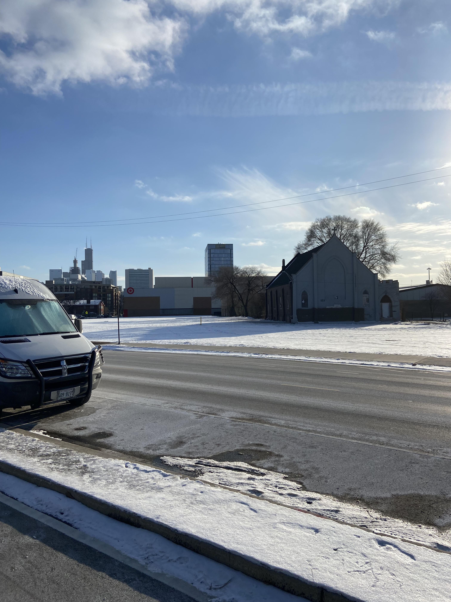
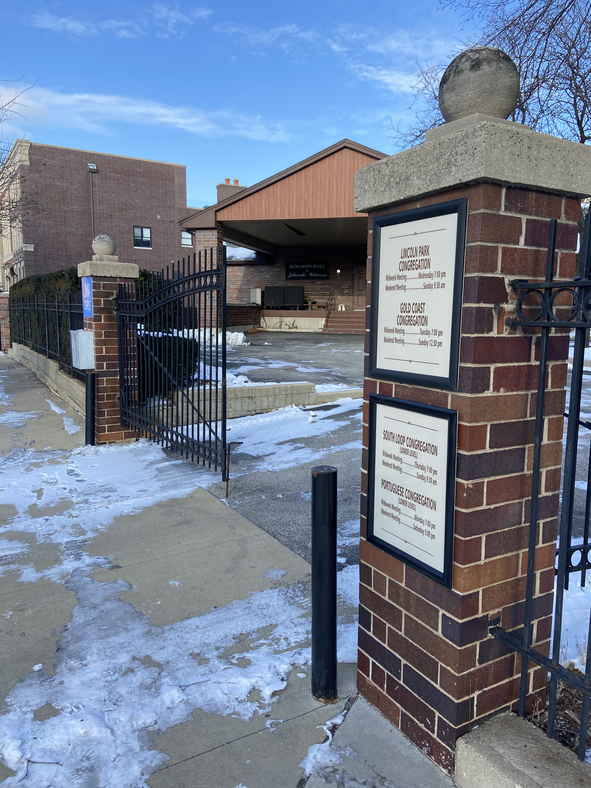
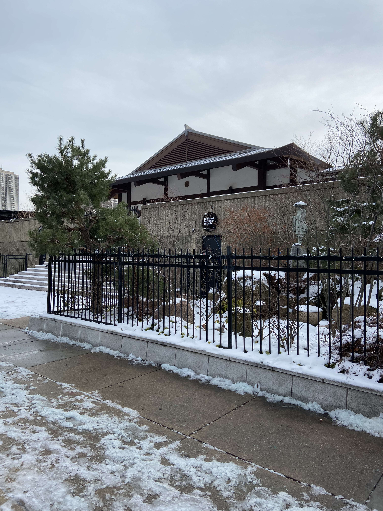
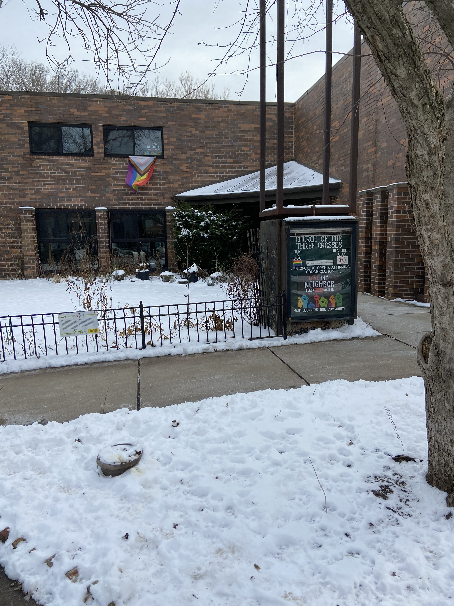
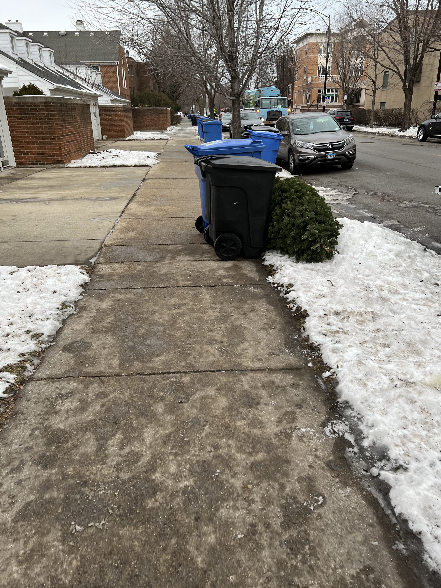

A parking lot for around 100 residents, decorated with Christmas decorations. This symbol shows the dominant religion of both Chicago and the United States, and how people are often insensitive to the desires and beliefs of others. The landlord, or a certain cavalier tenant decided the whole apartment complex will be expressive of Christian heritage.

At Fullerton and Lincoln, we can see the southern bound of the Edgewater eruv. The juxtaposition of the eruv wire and a huge corporation’s location sheds light on the use and purpose of an eruv; to adapt religion to better fit into contemporary capitalist society.

Located at Clybourn and Larabee, the abandoned Northside Stranger’s Home Church is now used for only secular events. The Target now occupies the land where many church residents used to live in Cabrini Green. The church remains for filming and sentimental purposes, but has not been destroyed. The mural on the side that had been there since 1972 was painted over, symbolizing the church's long fading influence on the neighborhood and its people.

On Fremont and Augusta, this house has the same architecture as the St. James Church. This appropriation and repurposing of what seems to be an old rectory shows the influence Christianity has on the landscape of Lincoln Park, and also shows the sacred and profane coexisting not only via adjacent buildings, but in the singular home on the left and its conflicting style and purpose.

This garden is located on Dayton St, just 250 feet from the North/Clybourn red line stop. It includes a mixture of religious symbols, along with an American flag. The garden has a buddha statue in the back, a cherub bird bath, and an evergreen tree that was planted there. The variety of symbols helps reflect modern religious beliefs (particularly of young folks), where strict adherence and religious intermarriage is not required, or even expected anymore.

On Halsted, just south of Webster, the carvings of angels and cherubs on the building display the contemporary blend of sacred and profane. The carvings were probably once used only for religious buildings, and the tenants in the building likely have no religious affiliation or reverence toward the sculptures. The presence of a facial care boutique business is a commentary on the lack of reverence society as a whole pays toward religious symbols; or, on the contrary, it can illustrate the lasting influence of religion on the physical landscape and architecture.

On St. Michaels Court and Eugenie, St. Michael’s Hall is a repurposed former worship/rectory space that is now used as high-end residential housing. St. Mike’s Hall is gentrified and only has remnants of religious history, rather than religion being core to its seemingly secular function.

On Clybourn and Mohawk lies the Lincoln Park Jehovah's Witness building. It shows three other buildings and their gathering times listed: Gold Coast, South Loop, and Portuguese Congregations. The listings show a curiously diverse set of followers and interesting inclusion of a Portuguese congregation. Being a rather obscure religion and more modern denomination, the Jehova’s Witnesses might be relatively more popular amongst Portuguese speaking peoples based on the signage.

The Midwest Buddhist Temple, located down the street from St. Michael’s Church on Menomenee and Hudson. The back end of the building (a parking lot often used as a concert venue) is on St. Michael’s Court, which shows the varying religions of the neighborhood and its peoples. I see more activity at this buddhist temple than I do at any of the other sites I photographed, but I wouldn’t call what I see traditional worship, at least from my experience in the Chrisitan faith.

Christianity has a history of excluding and discriminating against certain groups, such as the LGBTQ+ community. The pride flags draped in and around the Three Crosses Church, found on Wisconsin and Orleans, shows how religion is evolving to better cater to the changing social and cultural landscape, becoming more welcoming to people of all walks of life. The non-traditional building mirrors the congregation inside, providing evidence of a non-traditional Christian church.

Also found on Fremont, this image shows a home with a stained glass feature on the front facing side. Stained glass has always been a symbol I and many others associate with Christianity. There are many homes in the area with stained glass, and many of them with religious figures in the windows as well.
This statue appears outside of St Michael’s Church, St. Michael’s Hall, and the rectory. It is dedicated to a veteran, and the message says “Our dead are not unknown soldiers. We know who they are and whither they seek to go.” The use of old language helps frame the statue in time, and its relation and dedication to veterans conveys religion’s former grasp on the lives and psyche of soldiers and their families.

On Fremont Ave, south of Webster, this Christmas tree is being treated more like a piece of trash than as a religious symbol. This shows the fading significance of religion in what is historically one of two major Chrisitan holidays. The symbol may be losing its significance, and that is reflected in the priorities of children and adults alike during Christmastime.
On St. Michael’s Court and Eugenie, St. Michael’s Church takes up a large land mass in Old Town, showing that Christianity is still crucial to some proportion, if not a majority of the community. The rectory is now repurposed for education, daycare, and afterschool activities, representing the fleeting influence of religion in the lives of many and exemplifying the reuse of the spaces formerly reserved for religious activities. The construction equipment provides an alternative image, as the area around the church (sidewalks, fences, streets) are still being improved and maintained.